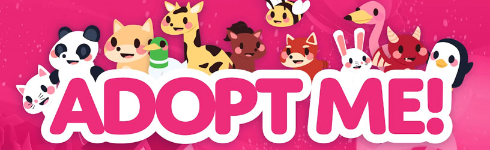

☰ Open Options
Pet Values
Pets can range from common to legendary, and as you guessed legendaries are the hardest to get. Commons can be traded for uncommons, uncommons can be traded for rares, and so on and so forth.
×
What is Adopt Me?
Starting The Game
Avatars
Collecting Bucks
Valuable Potions
Pet Values